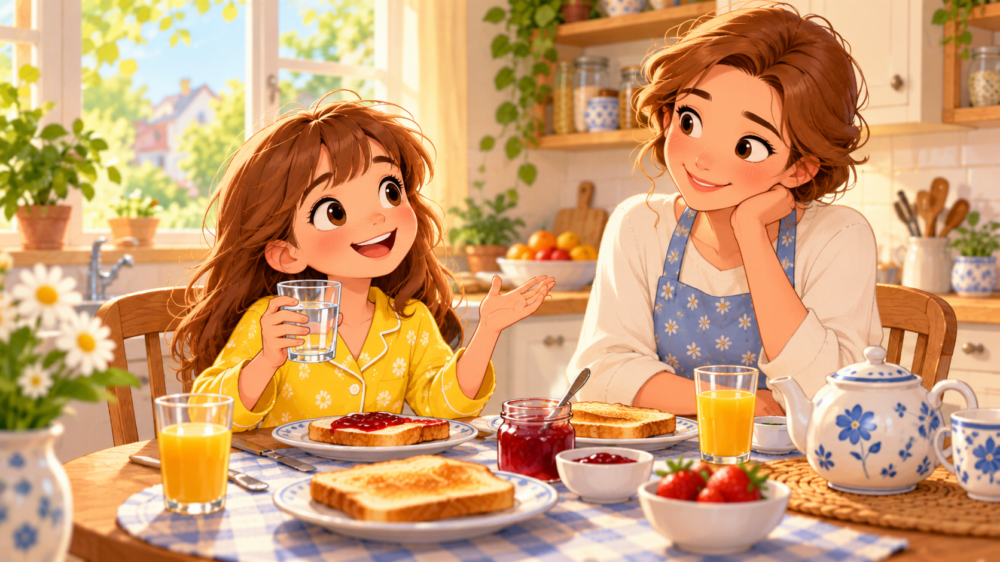
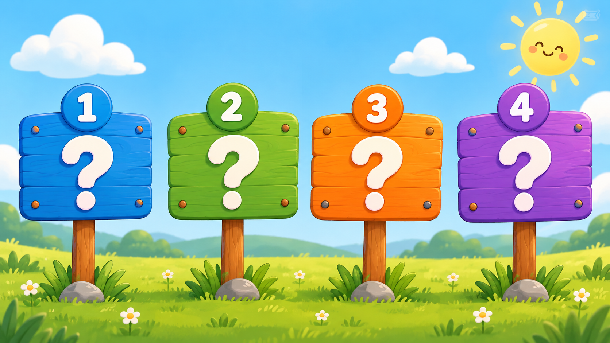
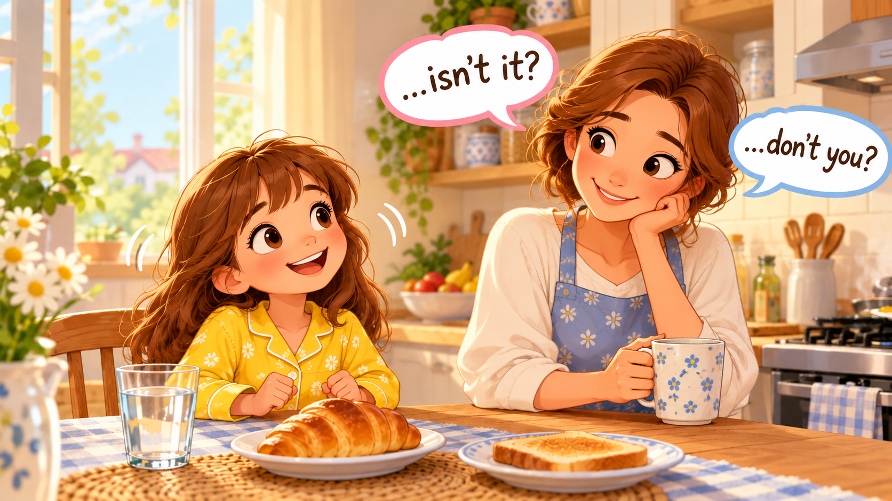
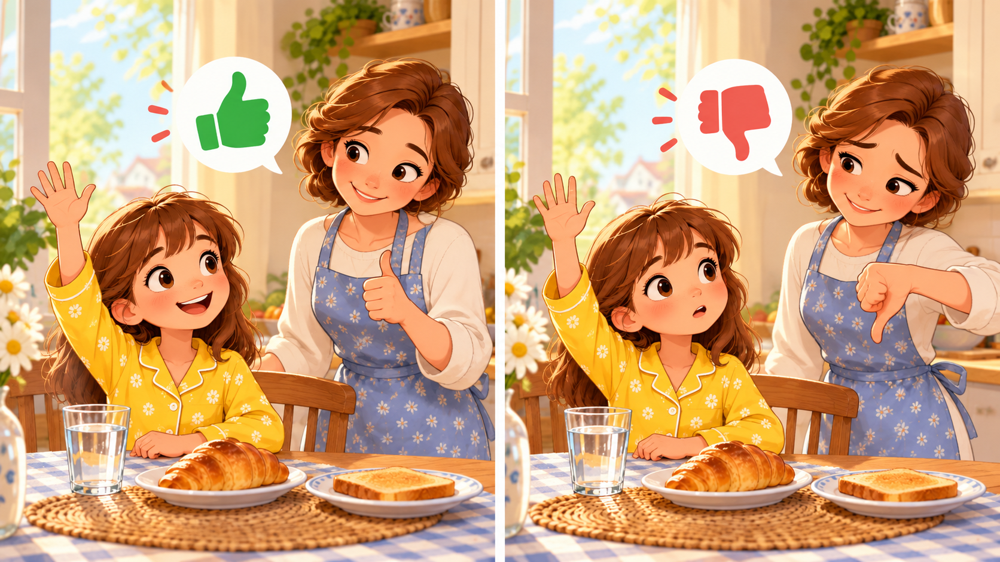
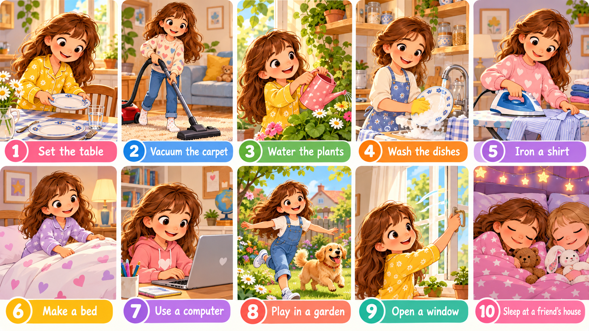
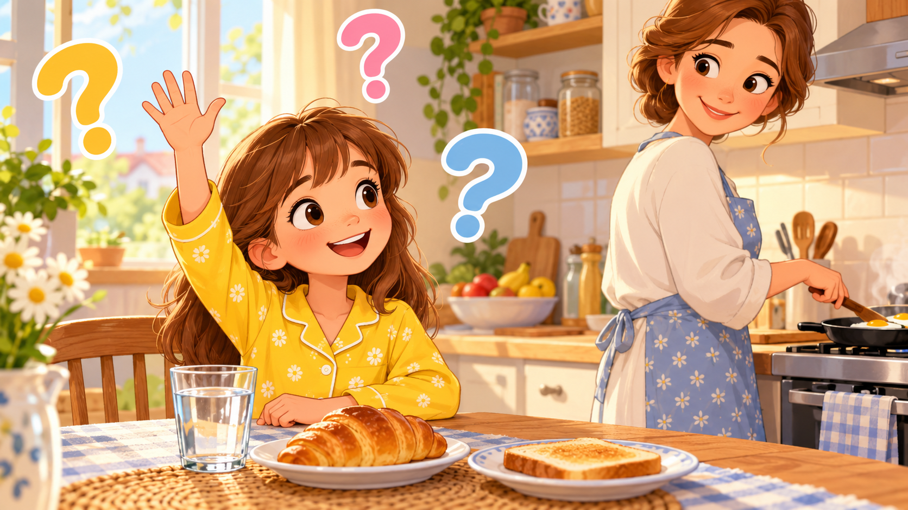

1 · прочитай вслух · подчеркни все вопросы цветом · послушай ниже

Saturday morning. Julia wakes up, makes her bed, and runs to the kitchen.
— Good morning, Mum! May I have a glass of water, please?
— Of course, Julia. Did you make your bed?
— Yes, I did.
— Great. Can you set the table for breakfast?
— Sure. Mum, you don't want cold toast, do you?
— Oh no, hot toast, please.
After breakfast, Julia asks: — May I use the computer for 20 minutes?
— Hmm… did you water the plants?
— Not yet. I'll do it now. One more thing — may I sleep at Sasha's house tonight?
— Where does Sasha live? Near our house?
— Yes, she lives next door.
— OK. But first — wash the dishes or vacuum the carpet. Which one do you want?
— Vacuum, please. It's quicker.
Julia starts the vacuum. The day is full of chores, full of questions, full of «yes, you may» and sometimes «no, you may not». But that's Saturday. That's family. 🏡
2 · послушай каждую строчку · повтори за голосом (shadow)
Послушай диалог ЦЕЛИКОМ 2 раза. Запиши в тетрадь:
May I…? (ответ: 3)3 · 4 карточки · по одной — на каждый тип

Ответ — только Yes или No. В начале — Do/Does/Did/Can/Is/Are/Was/Were/May.
Формула: aux + subject + verb?
Do you like pizza? / Can you swim? / Is it hot?
В начале — вопросительное слово: What · Who · Where · When · Why · How · Which. Ответ — развернутый.
Формула: WH + aux + subject + verb?
Where do you live? / What time is it? / Why is she sad?
Утверждение + маленький вопросик (хвостик) в конце. Если утверждение +, хвостик -. Если -, хвостик +.
Формула: statement, + opposite tag?
You like pizza, don't you? / She can't swim, can she?
Даём 2 варианта — спрашиваем A или B? Ответ — выбор одного.
Формула: Do you want A or B?
Tea or coffee? / Do you prefer dogs or cats?
4 · fill-in Do/Does/Can/Is/Did + builder + answer
Do (I/you/we/they) · Does (he/she/it)Did (все лица)CanMay или CanIs / Are / Was / Were5 · pick the WH-word + builder
What — что / какой (What's your name? What time is it?)Where — где / куда (Where do you live?)When — когда (When is your birthday?)Why — почему (Why are you sad?)Who — кто (Who is your best friend?)How — как (How are you? How old are you?)Which — который / какой из (Which cat is yours?)6 · правило переворота + match + build

Если утверждение положительное (+) → хвостик отрицательный (-).
Если утверждение отрицательное (-) → хвостик положительный (+).
+ → You like pizza, don't you? · She can swim, can't she?
- → You don't like pizza, do you? · She can't swim, can she?
🔑 Главное: в хвостике — та же часть aux (do/does/is/are/can/will…) + местоимение (I/you/he/she/it/we/they).
…, don't you? ✓…, doesn't she? ✓…, don't you? ✓7 · build + choice drill
Даём 2 варианта через or. Голос в конце не поднимается — спускается.
Формула: aux + subject + verb + A + or + B?
Do you want tea or coffee? · Is it hot or cold? · Does she like dogs or cats?
Ответ: выбор одного из двух (не Yes / не No!). «Coffee, please.» / «Hot.» / «Dogs.»
8 · ровно 6 вопросов из её учебника + 6 fix-the-negative

Формула: May + I + verb + ?
Короткий ответ «да»: Yes, you may. 😊
Короткий ответ «нет»: No, you may not. ☹️ (два слова раздельно, без апострофа)
Антипаттерны: may don't · may'nt · don't may · no may.
9 · весь vocab по дому · повтори вслух за голосом

10 · прочитай вопрос · угадай его тип
1 = Yes/No · 2 = WH · 3 = Tag «хвостик» · 4 = Alternative (A or B)
11 · ты задаёшь вопросы всех 4-х типов · мама отвечает

Задай маме 4 вопроса — по одному каждого типа. Мама отвечает как ей удобно, но ты следишь, чтобы правильно задать.
12 · 10 chores + 10 question markers · click to hear + type EN
🏆 Бонус: в течение дня задай маме хотя бы 10 вопросов на английском, разных типов. Отметь галочкой каждый — какой тип и был ответ Yes или No.